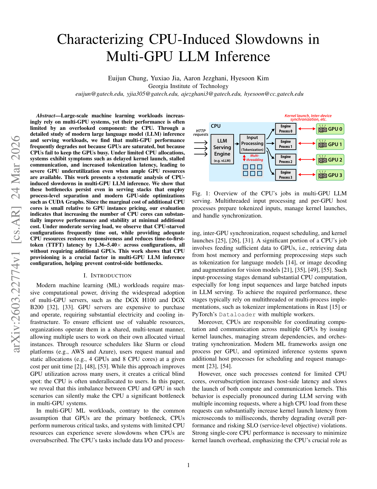
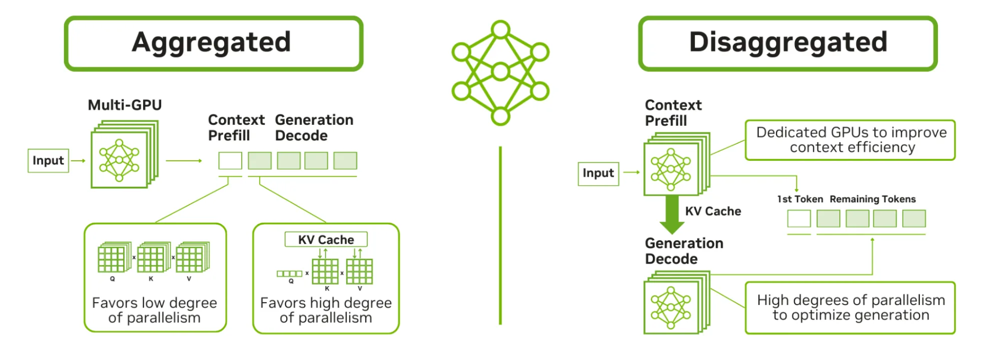
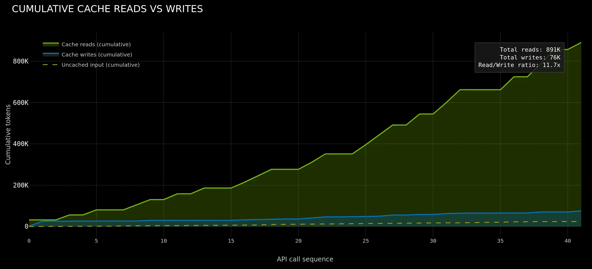
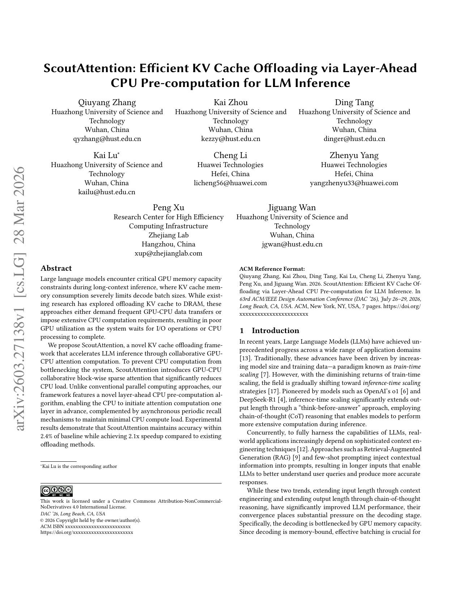
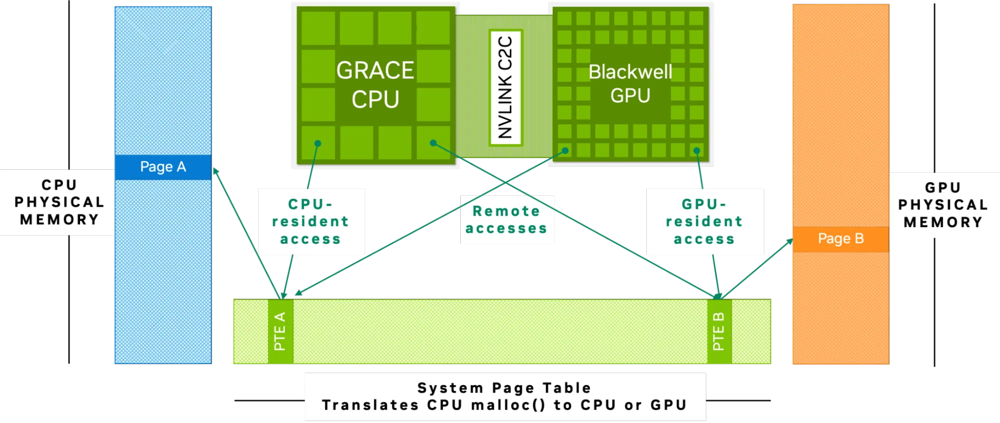
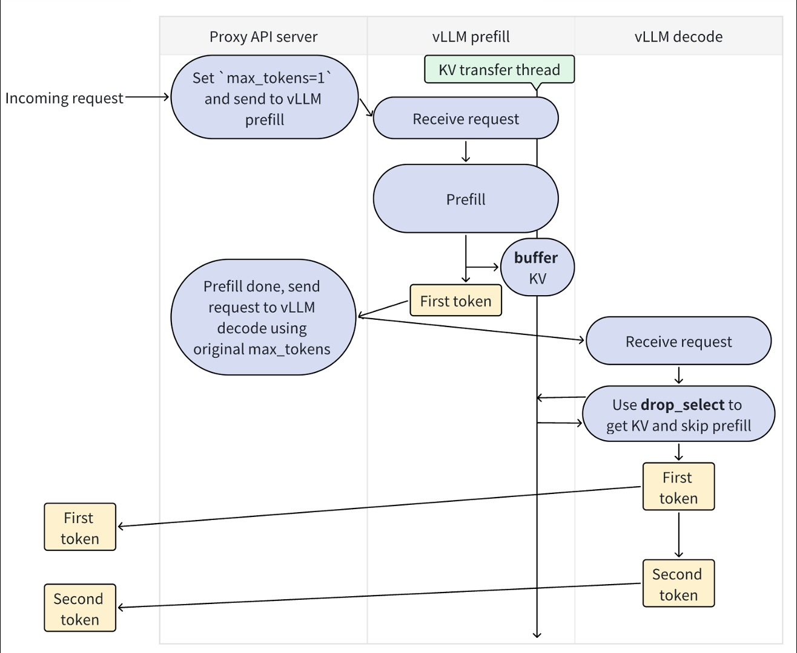
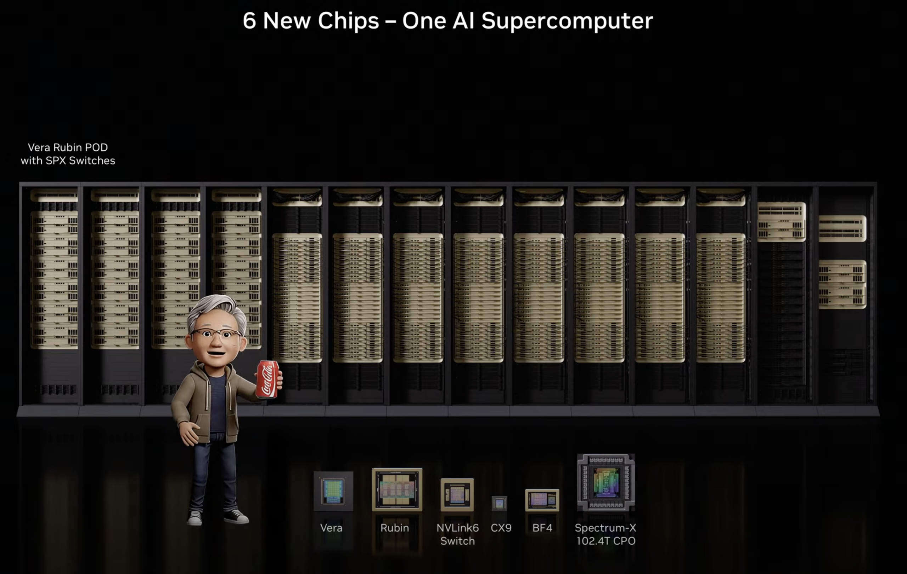
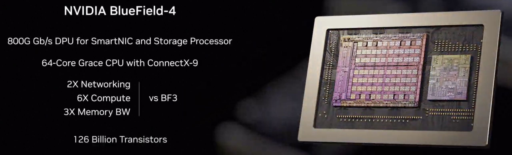

Export-Ready Review
2026-04-24
Updated: 2026-04-24
Date boundary: 主体证据仅采用2025-07-01及之后的公开资料；个别未公开精确发布日期的官方文档仅作补充说明。
Scope: 本文只讨论agentic LLM inference对机头 CPU 的影响，不将工具执行本身的 CPU 消耗计入主结论。
Material base: 基于 现有材料 目录中的报告、图表、下载引用材料与既有综述整理而成。
Agentic AI 推理正在把系统优化的重心，从“让 GPU
算得更快”推进到“让整个推理控制链路不阻塞
GPU”。围绕这一变化，现有材料
目录中的资料可以被收敛成五条主线：算子下发与状态驱动调度、KV cache 卸载与生命周期管理、MoE 的 host-side orchestration、真实 agentic workload 对传统 serving 假设的修正、以及
Vera / Rubin / BlueField-4 / CXL
所代表的平台侧收敛。综合这些材料，较稳健的结论是：机头 CPU
的角色已经从传统 host 演化为推理系统的第一层
orchestrator，其核心任务不再是辅助 GPU，而是管理请求接入、阶段切换、KV
放置、跨池传输、专家驻留与多代理并发控制，避免 GPU
因调度、状态和传输失配而空等 [1][2][6][9][10][11][12][22][23]。
关键词： agentic AI；LLM inference；host CPU；operator dispatch；KV cache offloading；MoE；prefill-decode disaggregation
如果把 现有材料 中的论文、厂商文档与产品工作负载放在一起看，机头 CPU 的重要性并不是因为它重新承担矩阵运算，而是因为 agentic inference 改写了系统瓶颈的分布方式：
因此，对 agentic inference 而言，真正稀缺的不只是 GPU FLOPS，而是
host-side orchestration budget [2][9][16][22][23]。
图1 Agentic 推理中的 CPU-centric workflow。该图从工作流层面展示了 CPU 如何介入请求接入、状态管理、传输触发和 GPU 执行协调，适合作为全文总图。来源：作者根据解耦 serving、agentic KV、subagent / swarm / mobile agent 等公开资料整理 [9][22][24][26][27]。
本文采用“总分总”结构，主结论先行，随后分别回答四个问题：
在此基础上，最后再讨论平台路线图已经给出了什么方向性信号，以及目前还缺什么证据。
这不是一个抽象判断，而是被多条独立证据链支撑的系统事实：
11.7x 的
read/write
ratio，说明系统压力已从“持续写新状态”转向“恢复、复用、路由旧状态”
[9]。在 agentic inference 中，CPU 侧真正消耗预算的往往不是纯计算，而是这些步骤：
这也是为什么现代优化越来越集中在
persistent batch、CUDA graphs、persistent kernels、KV transfer library
和 decoupled residency 上：这些技术的共同目标不是让 CPU
更强，而是让 CPU 更少地成为同步阻塞点 [4][5][11][12][23]。
传统推理里，KV cache 常被当作“长上下文需要的显存扩展”；但在 agentic inference 中，KV 更像一个长期状态对象，需要被保留、检索、恢复和复用 [6][7][9][10]。
MoE 减少的是每 token 激活计算，不是系统编排复杂度。专家数增大、驻留空间受限、跨设备 all-to-all 与异步预取叠加后，host-side orchestration 很容易成为新的吞吐上限 [11][12][28][30]。
Vera 的高带宽主机内存、NVLink-C2C、一体化平台组织方式，以及
BlueField-4
对网络/存储/安全的旁路，传递的不是单点产品宣传，而是平台层面对
CPU as orchestration plane 的确认
[13][14][17][22][28]。
report.md
和相关引用材料给出了一条很清晰的因果链：
一个具有代表性的工程测量是：某量化小模型一次前向传播发射 301 个 kernel，单个 launch 开销约 2.5 微秒，仅纯下发税就累计到约 750 微秒；通过 kernel fusion 将发射数降到 181 个后，吞吐从 1255 tok/s 提升到 1508 tok/s，提升约 20% [3]。这个结果的含义不是“launch 很慢”，而是：当 GPU 计算本体被压缩后，host 侧固定税费就会立刻浮出水面。
《Characterizing CPU-Induced Slowdowns in Multi-GPU LLM Inference》进一步把这一点系统化了 [2]。文中显示：
这里的关键并不是某个具体数字，而是说明：在多 GPU serving 中，一个被抢占的 host 线程足以拖慢整个同步链路。

图2 多 GPU LLM inference 中的 CPU-induced slowdown 示例图。该类图的意义不在于单个模型或单台机器的绝对数值，而在于直观展示 host 抖动如何被放大为端到端慢化。来源：CPU slowdown 论文图页 [2]。
相比“单条上下文、长 decode、稳定批次”的传统假设，agentic inference 更常见的是：
这让 host 侧不再只是“发起一次前向传播”，而是要持续处理 stage transition、context placement 和 request resumption [22][24][26][27]。

图3 解耦式 serving 拓扑。图中 ingress router、prefill worker、decode worker 的拆分说明，host 侧已从单机 launch 扩展为跨阶段路由和状态协调中枢。来源：NVIDIA, 2026 [22]。
从 现有材料 汇总材料看，针对算子下发的有效路线主要有四类：
kernel fusion / megakernel：减少发射次数与跨 kernel
边界同步 [3][4]。persistent batch：避免每步重建张量和 Python 数据结构
[5]。CUDA graph / piecewise capture：用图执行降低重复 launch
成本 [5]。CPU isolation：为 GPU worker 留出不被抢占的 host
核心，削弱 OS 调度抖动 [2]。小结：算子下发已经不是一个局部 runtime 问题，而是 agentic inference 下 host 侧控制链路被拉长后的系统性问题。
如果把 vLLM V1、Event Tensor、解耦 serving 和 CPU slowdown 这几类工作放在一起看，可以更具体地界定机头 CPU 在算子下发问题中的职责边界：
这说明“launch overhead”只是表层现象，底层问题其实是
control-path density 在 agentic inference 中上升了：每单位
GPU 计算量所对应的 host 控制动作更多、更碎、更难被隐藏
[2][4][5][22][23]。因此，只要控制路径仍然被频繁打断，GPU
算得再快，也会在系统层面失去意义。
关于 KV，现有材料 中最重要的证据不是“KV 很大”，而是 Dynamo
agentic inference 材料给出的访问模式变化：高命中率与 11.7x
的 read/write ratio 表明，系统的主要压力不再是不断写入新
KV，而是频繁读取、路由、恢复和复用既有 KV [9]。
换言之，在 agentic inference 中，KV 不再只是“上下文长度的副产品”，而是可跨轮次保留、可跨 worker 转移、可被多个子代理复用的长期状态。

图4 Agentic inference 的 KV 读写关系。该图显示累计读取显著高于累计写入，说明真正吃预算的是恢复、预取与重用，而非持续生成新状态。来源：NVIDIA, 2026 [9]。
NOSA、ScoutAttention 和 CoMEM 代表了三类不同但相互补充的路线：
5.04x 的解码吞吐提升 [6]。2.1x 加速
[7]。这些工作共同说明，CPU 在 KV 卸载系统中的位置已经变化：

图5 KV 卸载/预计算类方法的系统示意图。此类图揭示的核心不是具体实现细节，而是 CPU 已从被动存储代理变成主动参与预取、预计算和恢复控制的 warm-tier 协调者。来源：ScoutAttention 论文图页 [7]。
Grace/Blackwell coherent CPU-GPU memory 与 CXL 相关材料说明，现代 KV 分层已经不应被简化为“HBM vs DRAM” [10][15][29]。更现实的体系是：
其中，CXL 的意义不只是扩容。Astera Labs 给出的生产建模显示，CXL 内存层可使 GPU 需求下降 87%，GPU 利用率提升 75%，每查询 CPU 利用率下降 40%，并支持约 2 倍并发实例 [15]。这些数字说明，KV 分层已经从“技术补丁”变成“容量-性能-成本”的架构选择题。

图6 CPU-GPU 统一地址空间与一致性互连。高带宽一致性互连降低了 host memory 参与恢复路径时的摩擦，使 CPU 内存更适合作为 KV warm tier。来源：NVIDIA, 2025 [10]。
一旦 KV 成为长期状态对象，CPU 的需求就不再只看核心数，而要看：
这些指标之所以重要，是因为它们分别对应 warm-tier 命中后的恢复成本、近端/远端分层摩擦以及大容量状态对象的放置效率；换句话说，机头 CPU 的选型已不再只是“多少核心更划算”，而是“哪种内存层级和互连方式更适合承担状态系统” [10][15][29]。
小结：KV 卸载的重心已经从“把放不下的 KV 挪出去”转向“如何以低尾延迟维护一套分层状态系统”，而 CPU 正是这一系统的主执行者。
把这一章进一步压缩，可以把 KV lifecycle 理解成四个连续动作：
keep：哪些状态继续留在热层。demote：哪些状态降到 host DRAM / CXL / storage。prefetch：哪些状态需要在恢复前被提前拉回。resume：恢复时如何把尾延迟控制在可接受范围内。这四步中，真正由 GPU 决定的内容很少，真正由 CPU 决定的内容很多。因此，KV 卸载不是显存容量问题的附属解法，而是一个标准的 host-side state machine 问题 [6][7][9][10][15][29]。
MoE 的常见叙事是“总参数大、激活参数小，所以更高效”。但 现有材料 中的材料更清楚地表明：一旦 expert 总量超出单节点 GPU 驻留能力，系统问题会迅速浮现 [11][12][28][30]。
主要压力至少来自三处：
因此，MoE 真正节省的是 GPU 上的密集计算，不是系统编排成本。
Speculating Experts 的核心价值，是把 CPU→GPU 的权重搬运从同步阻塞路径挪到异步预测路径；文中报告 TPOT 可降低约 14% [11]。FluxMoE 则通过 decoupled residency，将逻辑 expert 身份与物理驻留位置分离，降低系统对“预测完全准确”的依赖 [12]。
这些工作共同说明：MoE 推理的关键不只是“算得稀疏”，而是能否在正确的时间把正确的 expert 放到正确的位置。这个问题本质上是 host-side orchestration 问题。

图7 宽专家并行拓扑。该图反映出 MoE 的性能瓶颈已经扩展到 expert 路由、放置与跨设备通信，因此 host 侧的协调能力直接影响系统吞吐。来源：NVIDIA, 2025 [28]。
在 agentic inference 中，同一个系统往往同时面对：
这意味着 KV 生命周期管理与 expert residency 很可能共享同一套 host 侧预算。也就是说，MoE 在 agentic inference 里的意义，不是单独增加一个问题，而是把原本已经存在的 host 压力继续叠加：一边是状态对象的保留与恢复，另一边是稀疏专家的放置与预取，两者都会竞争 host memory、传输窗口和调度队列 [9][11][12][28]。
小结：MoE 不是“GPU 算得更少，系统自然更轻”，而是“GPU 变稀疏之后，host-side orchestration 更容易成为上限”。

图8 MoE 专家预测与预取机制示意图。该类图说明 MoE 推理的关键优化正在把同步搬运改成预测驱动的异步预取，CPU 因而需要更稳定地承担路由、搬运与调度三重职责。来源：Speculating Experts 论文图页 [11]。
沿着 Speculating Experts、FluxMoE、wide expert parallelism 这条线，机头 CPU 在 MoE 中的任务可以被拆成三层：
logical routing：决定 token 应送往哪些 expert。physical residency：决定 expert
现在住在哪里，下一步该住在哪里。transfer scheduling：决定何时搬运、如何与计算重叠、如何避免
all-to-all 的同步放大。这三层任务都不是单个 GPU kernel 能独立完成的，因此 MoE 越成功，host orchestration 的价值越高 [11][12][28][30]。
现有材料 中引入 Claude Code subagents、Kimi Agent Swarm、OpenClaw、Mobile Use Agent 的价值，不在于把产品介绍塞进综述，而在于它们帮助识别了真实 agentic workload 的几个稳定特征 [24][25][26][27]：
这些特征并不直接告诉我们底层实现细节，但足以说明：真实系统已经偏离了传统 serving 优化默认采用的负载模型。

图9 Prefill-decode 解耦视角下的请求阶段与状态流转。该图本身来自 serving 系统视角，但与 subagents、swarm、mobile agent 等产品形态结合后，可以更直观看到为何真实 agentic workload 会放大高频 prefill、多会话并存和状态恢复压力。来源：vLLM 路线图与解耦 serving 资料 [5][22]；工作负载解释参考 [24][26][27]。
prefill-first 比想象中更重要GUI agent、mobile agent 和多轮代码 agent 会不断把新的观察、状态或中间结果重新送入模型。这意味着 host 侧不应只按“长 decode”设计，而必须对高频 prefill 更敏感 [22][24][27]。
session multiplicity 比单条长上下文更难Claude Code subagents 和 Kimi Swarm 共同指向的是：问题不只是“一个上下文很长”，而是“同时活跃的上下文太多”。这会直接抬高 per-session queue、admission control 和 placement policy 的复杂度 [24][26]。
fan-out/fan-in burst 会制造瞬时宽并发多代理系统的压力点并不总在平均 QPS，而往往出现在某一轮任务分解后的并发爆发，再在汇聚阶段形成二次瓶颈。这对 host 侧 burst handling 和尾延迟控制极为不友好 [26]。
multimodal ingress 让 host 内存与排队压力上升即便不把手机操作或工具执行本身算进 CPU 主结论，视觉输入重新进入推理链路，也会放大 prefill、状态切换和会话绑定压力 [25][27]。
小结：真实 agentic workload 让机头 CPU 的问题从“服务单条请求”演化为“管理异构、可恢复、可分叉的状态集合”。
这一章如果继续压缩，可以把几类产品形态翻译成更底层的系统约束：
session multiplicity。fan-out / fan-in burst width。multimodal prefill churn。resume-heavy execution。这种翻译的意义在于，它把“产品看起来更复杂”变成了“host 需要管理更多状态机”。因此，真实 workload 不是补充案例，而是用来修正系统模型的核心证据 [24][25][26][27]。
NVIDIA Vera CPU 相关资料给出的关键信号包括：88 个定制 Arm
核、1.2 TB/s 的 LPDDR5X 带宽、1.8 TB/s 的
NVLink-C2C 带宽，以及“AI factory 控制平面”的明确定位
[13][14][17]。这些参数之所以重要，不只是因为它们高，而是因为它们恰好对应了
agentic inference 中最吃 host 预算的环节：

图10 Vera CPU 架构与关键规格。高内存带宽和高 CPU-GPU 互连带宽说明其设计目标并非传统通用服务器 CPU，而是更接近 AI factory 控制平面处理器。来源：NVIDIA, 2026 [13]。
Rubin、NVLink Switch、BlueField-4 与网络交换的一体化平台表明，平台设计已经不再把 CPU、GPU、DPU 看成松耦合部件，而是按一个完整的推理系统来组织 [14][22][28]。

图11 Vera、Rubin、BlueField-4 与交换组件的协同平台。该图说明机头 CPU 的位置已前移为整个平台的控制平面，而非传统意义上的外围 host。来源：StorageReview, 2026 [14]。
TrendForce 以及多份产业评论都判断，AI 数据中心的 CPU:GPU
配比正在从传统的 1:4–1:8 向 1:1–1:2 演进
[16][18][19][20][21]。即便这些数字需要继续验证，它们至少说明产业已经在按“更多
CPU 预算是合理的”来规划未来部署。
小结：平台路线图并非对论文结论的简单附会，而是在硬件组织方式上确认了 host orchestration 的价值正在上升。
把 Vera、Rubin、BlueField-4、CXL 这些信号放在一起，最值得注意的不是单个参数，而是职责位置的变化：
这说明 host CPU 的问题已经不是“传统服务器 CPU 能不能顺便做一点推理工作”，而是“AI inference control plane 应该长什么样”。这也是为什么平台讨论必须成为综述正文的一部分，而不能只放在附录里 [13][14][15][16][17][22][28]。
从前文四条主线可以看出，同样是“机头 CPU”，不同部署角色的关注点其实不同：
co-located GPU node：更看重近端一致性互连、主机内存带宽与恢复路径延迟。prefill-heavy ingress node：更看重高频 prefill
下的调度稳定性、tokenization 与输入处理能力。capacity-oriented state node：更看重大容量 host
memory、CXL 挂接与分层成本。coordination-heavy swarm node：更看重多会话调度、burst
handling 与尾延迟隔离。这也是为什么本文一直强调，agentic inference 中的 CPU 选型不应再被理解为“给 GPU 配一颗合适的 host CPU”，而应被理解为“给不同节点角色配置不同控制平面预算” [10][15][16][22][23]。
如果把现有材料压成工程语言，可以得到一个相对稳健的部署分层框架：
热层：GPU HBM，承载当前 step
必须参与计算的状态与权重。温层：coherent CPU memory / host
DRAM，承载高概率恢复对象、近端 overflow 与快速复用状态。暖层扩展：CXL
memory，承载容量优先但仍要求可控恢复延迟的对象。冷层：local / remote
storage，承载低热度状态与更远期恢复对象。
图12 Agentic inference 的状态分层内存示意图。该图将 HBM、CPU memory、CXL 和更远层存储放在同一个层次视图里，更适合用来解释部署侧的 tiering 决策。来源：本目录整理图，依据 KV offload、coherent memory 与 CXL 资料 [9][10][15][29]。
这一分层最直接的意义，是把“CPU 配置”从单一算力参数改写成一组系统参数：
BlueField-4 这类组件在本文中的意义，不是单独讨论 NIC 或 DPU，而是说明：当网络、存储和安全路径可以被旁路时，机头 CPU 就能把更多预算留给推理控制面 [14][22]。

图13 BlueField-4 DPU 与网络/存储卸载架构。该图的关键不是 DPU 自身，而是它说明平台开始主动把数据面职责从 CPU 上拿走，从而给推理控制链路让出预算。来源：StorageReview / NVIDIA 平台资料 [14][22]。
对于真正的工程部署，CPU 选型至少应回答以下问题：
prefill-heavy、resume-heavy
还是 decode-heavy 负载？session multiplicity 或
fan-out/fan-in burst？如果这些问题里大多数回答都是“是”，那么该节点对 CPU 的需求就不应再按传统 serving 假设来配置，而应按 orchestration node 来配置 [2][9][10][15][22][23]。
当前公开材料已经足以说明 CPU 重要，但仍缺一个被普遍接受的
agentic inference host benchmark。原因并不复杂：传统
benchmark 大多只覆盖吞吐、TPOT、TTFT
或显存占用，却很少把以下因素放进同一个测量框架：
因此，很多系统虽然在单请求或稳定 batch 上表现良好，却未必能在真实 agentic workload 下保持低抖动 [2][9][24][26][27]。
如果要设计一套面向机头 CPU 的 benchmark，本文认为至少要覆盖五类指标：
dispatch latency：从请求进入到 GPU 有效开算之间的 host
延迟。resume latency：状态对象从 warm/cold tier
恢复回计算路径的延迟。session concurrency quality：多会话并存时的公平性与尾延迟。burst robustness：fan-out / fan-in
宽并发下的退化曲线。tiering efficiency：KV / expert / context
在多层内存中的放置与迁移效率。这些指标之所以重要，是因为它们分别对应本文四条主线的实际工程落点：算子下发、KV 生命周期、MoE orchestration、真实 workload 修正。
即便材料已经相当丰富，仍有三条断层值得单独指出：
产品到机制的断层：真实产品公开的内部指标仍太少，导致很多
workload 结论只能做形态推断。平台到软件的断层：Vera / Rubin / BlueField-4
给出了清晰方向，但软件栈与实际部署经验还不够丰富。局部优化到系统目标的断层：许多论文能优化某一段链路，却缺少覆盖整条
control path 的统一评估框架。如果把本文归纳出的空白继续往前推，可以得到一个相对清晰的研究议程：
agentic inference host benchmark，而不是继续只用传统
serving 指标。state-centric scheduling，把 KV / context / expert
一起视作长期状态系统。control-plane-aware serving，把 host orchestration
视作第一等优化目标。platform-software co-design，让 CPU、GPU、DPU、CXL
和 transport 栈在同一框架下评估。这几条议程之所以重要，是因为 agentic inference 的核心难题已经不再只是“如何让单次前向传播更快”，而是“如何让一个长期、可恢复、可分叉的推理系统稳定运行” [2][9][11][15][22][28]。
| 主题 | 关键数据点 | 含义 | 主要来源 |
|---|---|---|---|
| 算子下发 | 301 次 kernel launch、约 750 微秒纯下发税、fusion 后吞吐约提升 20% | 小模型与量化场景下，host 固定成本会迅速成为上限 | [3] |
| CPU 抖动 | dequeue 延迟从 12 ms 恶化到 228 ms，约 19x | CPU oversubscription 可放大为集群级停顿 | [2] |
| 推理引擎优化 | vLLM V1 吞吐相对 V0 最高约 1.7x |
大量收益来自减少 CPU 侧调度和 Python 开销 | [5] |
| KV 访问模式 | KV read/write ratio 11.7x |
agentic inference 更像状态恢复问题，而非单纯写入问题 | [9] |
| KV 卸载 | NOSA 最高 5.04x 解码吞吐提升 |
减少 CPU-GPU KV 传输量是核心收益来源 | [6] |
| 协同式卸载 | ScoutAttention 约 2.1x 加速，精度损失 < 2.4% |
CPU 可以从搬运者变成协同计算者 | [7] |
| CXL 分层 | GPU 需求下降 87%，GPU 利用率提升 75%，CPU 利用率下降 40% | KV 分层已经进入容量-性能-成本联合优化阶段 | [15] |
| MoE 预取 | TPOT 下降约 14% | expert 预取能把同步搬运改成异步路径 | [11] |
| 平台规格 | Vera 内存带宽 1.2 TB/s，NVLink-C2C
1.8 TB/s |
平台已按 CPU 控制平面需求组织 | [13] |
| 产业配比 | CPU:GPU 由 1:4–1:8 向 1:1–1:2 演进 |
部署预算开始显式向 host 侧回流 | [16] |
这批材料最强的地方，是四条证据链能够相互印证：
但仍有三类缺口没有真正闭合：
agentic inference host benchmark。把 现有材料 中的所有内容压成一句话，最准确的表达不是“CPU 又重要了”，而是：
agentic AI 推理正在把原本隐藏在 host 侧的调度、状态、传输和编排链路重新暴露出来，而机头 CPU 就是这条链路的第一执行者。
因此，机头 CPU 在 agentic inference 中的角色不应再被理解为“GPU 旁边那颗普通服务器 CPU”，而应被理解为：
推理系统的 orchestration layer in silicon。
对未来系统设计而言，这一判断至少带来三点直接启示：
[1] RAJ R, et al. Towards understanding, analyzing, and optimizing agentic AI execution: a CPU-centric perspective[EB/OL]. arXiv:2511.00739, 2025[2026-04-24]. https://arxiv.org/abs/2511.00739.
[2] Characterizing CPU-induced slowdowns in multi-GPU LLM inference[EB/OL]. arXiv:2603.22774, 2026[2026-04-24]. https://arxiv.org/abs/2603.22774.
[3] What actually bottlenecks LLM inference on modern GPUs[EB/OL]. AI.rs, 2026[2026-04-24]. https://ai.rs/ai-developer/memory-wall-disappears-llm-inference-bottlenecks.
[4] Event Tensor: dynamic megakernels for LLM serving[EB/OL]. arXiv:2604.13327, 2026[2026-04-24]. https://arxiv.org/abs/2604.13327.
[5] vLLM Project. vLLM V1 alpha release and subsequent public roadmap materials[EB/OL]. 2025-2026.
[6] HUANG Y, et al. NOSA: native and offloadable sparse attention[EB/OL]. arXiv:2510.13602, 2025[2026-04-24]. https://arxiv.org/abs/2510.13602.
[7] ZHANG Q, et al. ScoutAttention: efficient KV cache offloading via layer-ahead CPU pre-computation[EB/OL]. arXiv:2603.27138, 2026[2026-04-24]. https://arxiv.org/abs/2603.27138.
[8] CoMEM: a decoupled agent framework with asynchronous memory compression[EB/OL]. OpenReview, 2025[2026-04-24]. https://openreview.net/pdf?id=c7c6541f58ddaf647289d2523a9587312294301a.
[9] NVIDIA. Full-stack optimizations for agentic inference with NVIDIA Dynamo[EB/OL]. 2026[2026-04-24]. https://developer.nvidia.com/blog/full-stack-optimizations-for-agentic-inference-with-nvidia-dynamo/.
[10] NVIDIA. Accelerate large-scale LLM inference and KV cache offload with CPU-GPU memory sharing[EB/OL]. 2025[2026-04-24]. https://developer.nvidia.com/blog/accelerate-large-scale-llm-inference-and-kv-cache-offload-with-cpu-gpu-memory-sharing/.
[11] Speculating experts accelerates inference for mixture-of-experts[EB/OL]. arXiv:2603.19289, 2026[2026-04-24]. https://arxiv.org/abs/2603.19289.
[12] FluxMoE: decoupling expert residency for high-performance MoE serving[EB/OL]. arXiv:2604.02715, 2026[2026-04-24]. https://arxiv.org/abs/2604.02715.
[13] NVIDIA. NVIDIA Vera CPU delivers high performance, bandwidth, and efficiency for AI factories[EB/OL]. 2026[2026-04-24]. https://developer.nvidia.com/blog/nvidia-vera-cpu-delivers-high-performance-bandwidth-and-efficiency-for-ai-factories/.
[14] StorageReview. NVIDIA launches Vera Rubin architecture at CES 2026[EB/OL]. 2026[2026-04-24]. https://www.storagereview.com/news/nvidia-launches-vera-rubin-architecture-at-ces-2026-the-vr-nvl72-rack.
[15] Astera Labs. How CXL transforms RAG and KV cache performance[EB/OL]. 2025[2026-04-24]. https://www.asteralabs.com/breaking-through-the-memory-wall-how-cxl-transforms-rag-and-kv-cache-performance/.
[16] TrendForce. How agentic AI is reshaping the CPU:GPU ratio[EB/OL]. 2026[2026-04-24]. https://insights.trendforce.com/p/agentic-ai-cpu-gpu.
[17] Data Center Dynamics. NVIDIA Vera CPU enters full production, pitched at agentic AI workloads[EB/OL]. 2026[2026-04-24]. https://www.datacenterdynamics.com/en/news/nvidia-vera-cpu-enters-full-production-pitched-at-agentic-ai-workloads/.
[18] The Diligence Stack. Secret agent CPU[EB/OL]. 2026[2026-04-24]. https://thediligencestack.com/p/secret-agent-cpu.
[19] rmmod. In the age of agentic, the CPU is the new bottleneck[EB/OL]. 2026[2026-04-24]. https://rmmod.com/posts/agent/agentic-cpu-bottleneck/.
[20] Uncover Alpha. The forgotten chip: CPUs the new bottleneck of the agentic AI era[EB/OL]. 2026[2026-04-24]. https://www.uncoveralpha.com/p/the-forgotten-chip-cpus-the-new-bottleneck.
[21] Zylos Research. AI inference optimization techniques (2025-2026)[EB/OL]. 2026[2026-04-24]. https://zylos.ai/research/2026-01-11-ai-inference-optimization.
[22] NVIDIA. Deploying disaggregated LLM inference workloads on Kubernetes[EB/OL]. 2026[2026-04-24]. https://developer.nvidia.com/blog/deploying-disaggregated-llm-inference-workloads-on-kubernetes/.
[23] NVIDIA. Enhancing distributed inference performance with the NVIDIA inference transfer library[EB/OL]. 2026[2026-04-24]. https://developer.nvidia.com/blog/enhancing-distributed-inference-performance-with-the-nvidia-inference-transfer-library/.
[24] Anthropic. Subagents[EB/OL]. Claude Code Documentation[2026-04-24]. https://docs.anthropic.com/en/docs/claude-code/sub-agents.
[25] OpenClaw. openclaw/openclaw README[EB/OL]. [2026-04-24]. https://github.com/openclaw/openclaw.
[26] Kimi. Kimi introduces Agent Swarm: let 100 AI agents work for you[EB/OL]. 2026[2026-04-24]. https://www.kimi.com/blog/agent-swarm.html.
[27] 火山引擎. 不止对话，更能执行！火山引擎 Mobile Use Agent 全新升级，解锁企业级移动 AI 执行力[EB/OL]. 2026[2026-04-24]. https://developer.volcengine.com/articles/7628489608359395369.
[28] NVIDIA. Scaling large MoE models with wide expert parallelism on NVL72 rack-scale systems[EB/OL]. 2025[2026-04-24]. https://developer.nvidia.com/blog/scaling-large-moe-models-with-wide-expert-parallelism-on-nvl72-rack-scale-systems/.
[29] NetApp. KV cache offloading — CPU RAM vs. storage[EB/OL]. 2025[2026-04-24]. https://community.netapp.com/t5/Tech-ONTAP-Blogs/KV-cache-offloading-CPU-RAM-vs-storage/ba-p/464463.
[30] PatSnap. MoE inference cost cuts: 30+ patents analyzed[EB/OL]. 2026[2026-04-24]. https://www.patsnap.com/resources/blog/articles/moe-inference-cost-cuts-30-patents-analyzed/.